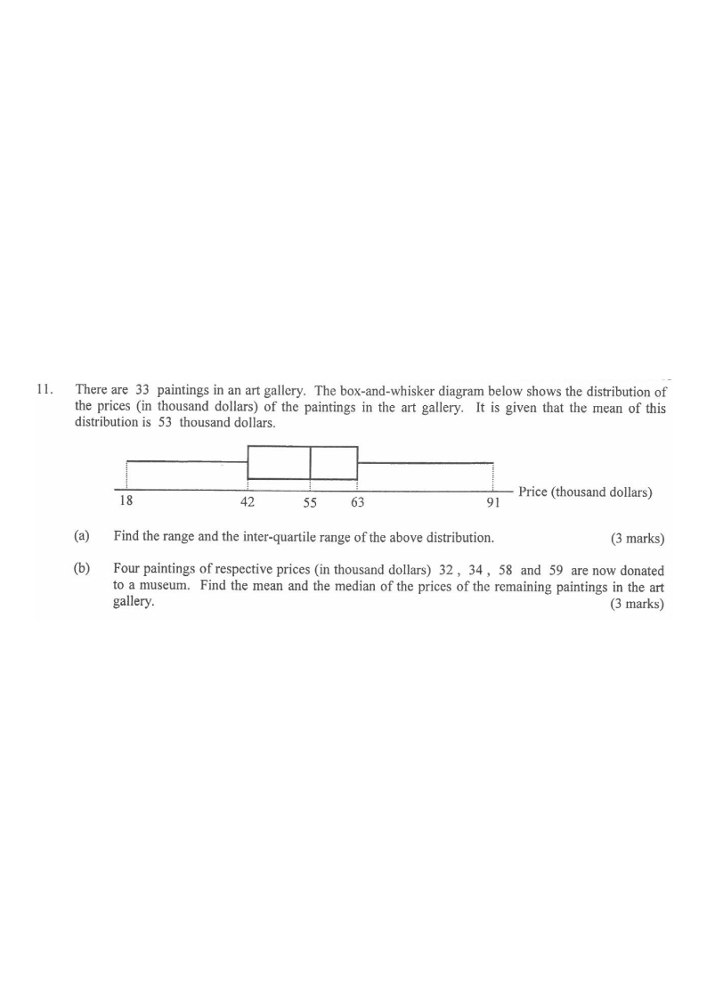

HKDSE 2014 Paper 1 — Question 11
Topic 15 · Statistics
There are 33 paintings in an art gallery. The box-and-whisker diagram below shows the distribution of the prices (in thousand dollars) of the paintings in the art gallery. It is given that the mean of this distribution is 53 thousand dollars.
(a) Find the range and the inter-quartile range of the above distribution. [3 marks]
(b) Four paintings of respective prices (in thousand dollars) 32, 34, 58 and 59 are now donated to a museum. Find the mean and the median of the prices of the remaining paintings in the art gallery. [3 marks]

Part (a)
STEP 1Read the five-number summary from the diagram.
Minimum $=18$, $Q_1=42$, Median $=55$, $Q_3=63$, Maximum $=91$.
The left whisker ends at the smallest value, the right whisker at the largest; the box edges are $Q_1$ and $Q_3$, the line inside is the median.
STEP 2Find the range.
$\text{Range} = \text{Maximum} - \text{Minimum} = 91 - 18 = 73$ (thousand dollars).
Range measures total spread: largest minus smallest.
STEP 3Find the inter-quartile range.
$\text{IQR} = Q_3 - Q_1 = 63 - 42 = 21$ (thousand dollars).
IQR measures the spread of the middle 50% of the data, so it is unaffected by extreme values.
Part (b)
STEP 4Original total price of the 33 paintings.
$\text{Total} = 33 \times 53 = 1749$ (thousand dollars).
Mean × number of items = total sum.
STEP 5Subtract the four donated paintings and recompute the mean.
$32+34+58+59 = 183$
Remaining total $= 1749 - 183 = 1566$ (thousand dollars).
Remaining number of paintings $= 33 - 4 = 29$.
$\text{Mean} = \dfrac{1566}{29} = 54$ (thousand dollars).
Be careful: the denominator changes from 33 to 29.
STEP 6Find the new median.
Note that two donated prices, $32$ and $34$, are less than $55$, while $58$ and $59$ are greater than $55$.
Both sides lose 2 paintings, so the middle value is unchanged.
$\text{Median} = 55$ (thousand dollars).
The new data set has 29 values (odd) — the 15th smallest value. Removing 2 values below and 2 above $55$ keeps $55$ in the middle position.
Answer: (a) Range $=73$ thousand dollars; IQR $=21$ thousand dollars. (b) Mean $=54$ thousand dollars; Median $=55$ thousand dollars.